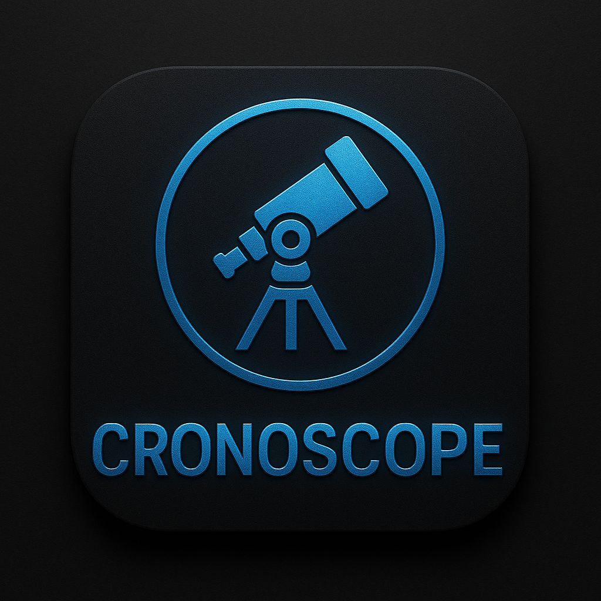

NASA SPACE APPS · SPHEREX
Explore archived SPHEREx observations, wavelength context, and scientific visualizations across time.
This static catalog follows packaged SPHEREx observations and frozen JPL Horizons predictions. It is an explorer, not a detection or discovery claim.
Packaged coordinate match
Match a documented frozen position
Matches only the retained five-decimal JPL Horizons endpoint coordinates in this offline catalog. This is not a sky-footprint or live-archive search.
Color Reference Image — Not SPHEREx Data
Target Gallery
Search M31, M87, or M42 to load a verified bundled color reference image.
No verified target image selected. Arbitrary coordinates are never matched to a photograph.
60-second guide · RW Aurigae
One scientific story across four views
Load RW Aurigae, inspect its packaged epochs, compare A/B imagery, then explore wavelength context and genuine measurements.
How it works
This demo compares two archived observations. Geometry describes predicted displacement between those epochs; it does not show continuous tracking or a confirmed detection.
NASA Space Apps Challenge
RW Aurigae — two packaged SPHEREx epochs
Explore wavelength context, genuine packaged spectral measurements, and an A/B observation comparison across time.
Moving Objects
Choose a frozen A → B trajectory
These asteroids, including 5122 Mucha (1989 AZ1), remain Cronoscope's demonstrated-motion examples. Flat RA/Dec display, wrapped at 0°/360°.
NASA Space Apps Challenge
Explore real SPHEREx sky context
Explore packaged SPHEREx imagery, wavelength context, and spectral measurements where supplied. Entries distinguish usable image context from its scientific limits.
Selected track
Loading catalog…
Science details
Observation Explorer
Target-centered SPHEREx imagery
Gold crosshair = Horizons predicted position. Source-like structure is visible near the predicted position; this visualization does not by itself confirm object identity. Blink compares different sky locations, not registered backgrounds.
Display zoom and pan alter only the browser presentation; they do not alter values, registration, or coordinate interpretation.
Difference / Research View and science details
Research evidence from difference imagery, where available, is experimental comparison context—not a detection claim.
Static science contract
Frozen, offline, traceable
Experimental research evidence is secondary context—not a detection confidence or discovery claim.